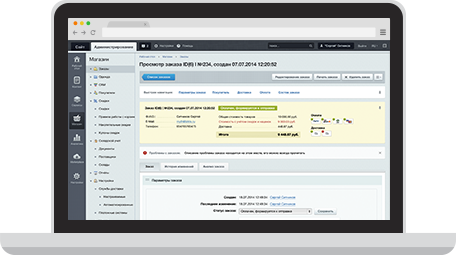

Вы также получите
больше мегаинструментов
BigData: Персонализация
Конкуренция среди интернет-магазинов обостряется с каждым днем. Выигрывает тот, кто умеет лучше конвертировать своих посетителей в заказы. Разместите компонент персонализации на страницах вашего интернет-магазина, сделайте магазин персональным для покупателя.
Сервис «Скорость сайта»
Cервис «Скорость сайта» дает ответ: «Быстро ли работает ваш сайт по мнению ваших посетителей?». Сервис измеряет скорость загрузки ресурса у реальных пользователей и отображает данные на ярком виджете.
Контекстная реклама:
интеграция с Яндекс.Директ
Возможность создавать новые кампании, создание объявлений для конкретных товаров интернет-магазина, возможность связывать ранее созданные объявления с товаром, подбор ключевых слов, возможность управления объявлениями и бюджетом.
Менеджер заказов
Независимая отгрузка составных частей заказа, независимая оплата составных частей заказа, гибкая работа со скидками, удобная навигация, анализ текущего состояния заказа - эти и другие возможности облегчают работу мененджера интернет-магазина, сэкономят его время при взаимодействии с клиентами.

Мастер скидок
Маркетологи смогут сами настраивать скидки для своих рекламных кампаний, а не просить технических работников. Достаточно выбрать из списка нужную предустановку, придумать скидке название, задать размер и выбрать товары, на которые она действует. Скидка готова! Вам не нужно думать о настройках и составлять сложные правила - за вас все это сделает система.
Мастер управдления магазином
Какая последовательность действий при настройке нового функционала? Что необходимо подключить, чтобы повысить конверсию магазина? Как узнать, все ли в порядке с интернет-магазином? На все эти вопросы ответит Мастер - пошаговая инструкция по созданию, наполнению и продвижению магазина.
 Аудитория Яндекс.Маркета —
Аудитория Яндекс.Маркета —